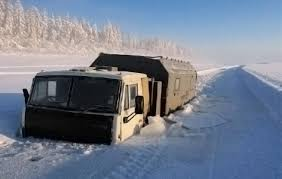
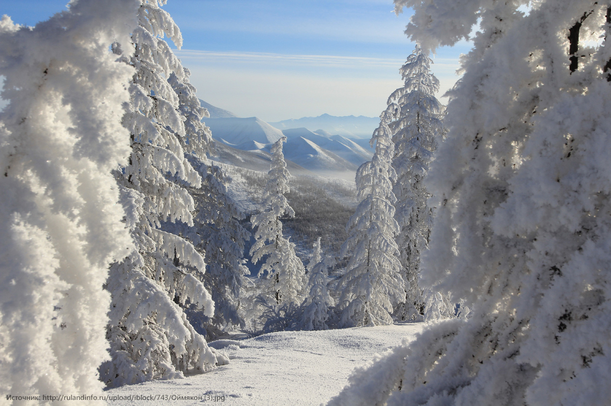

Оймяко́н (якут. Өймөкөөн) — село в Оймяконском улусе Якутии,
административный центр сельского поселения «Борогонский 1-й наслег».
Оймякон наиболее известен как один из «Полюсов холода» на планете; по ряду
параметров Оймяконская долина — наиболее суровое место на Земле, где
проживает постоянное население.
Климат
Оймякон имеет достаточно сложный тип климата. На климат влияет широта
села, равная 63,27 градусам (приполярные широты), большая удалённость от
океана (резко континентальный климат), нахождение на высоте 741 метр над
уровнем моря (влияет высотная поясность). Высота над уровнем моря понижает
температуру на 4 градуса по сравнению с той, которая наблюдалась бы при
нахождении на уровне моря, и усиливает ночное выхолаживание воздуха. Зимой
в село стекается холодный воздух, так как оно находится в котловине. Лето
в селе — короткое, с большим перепадом суточных температур: днём может
быть +30 °C и выше, но ночью температура может упасть на 15—20 °C.
Среднегодовая величина атмосферного давления в Оймяконе составляет 689
миллиметров ртутного столба. В 1926 г. геолог С. В. Обручев, направляясь к
хребту Черского, в с. Томтор Оймяконского района записал в своём дневнике,
что в этих местах возможна температура −71,2°С. Однако, так как
документальное подтверждение подлинности замеров отсутствует, официально
они не признаны. Официально признанный абсолютный минимум был
зарегистрирован Оймяконской метеорологической станцией (основана в 1929
г.) 6 февраля 1933 г. — −67,7°С. Якутская лошадь в Оймяконе В настоящее
время власти Якутии решили спор в пользу Верхоянск, но вопрос остаётся
открытым: ряд учёных и метеорологические наблюдения однозначно указывают
на преимущество Оймякона в споре за «морозное первенство Северного
полушария». Хотя минимальная среднемесячная температура в Верхоянске в
январе на 3 градуса ниже, чем в Оймяконе (-57,1 °C в 1892 году), а также
ниже в среднем в январе, феврале, апреле, июне, июле, августе и декабре,
по сегодняшним данным среднегодовая температура в Оймяконе на 0,3 градуса
ниже, чем в Верхоянске, а абсолютный минимум, по неофициальным данным, на
12,2 градусов ниже. Если брать официальные данные, получится превышение
температуры на 4,4 градуса.
Климат Оймякона
| Показатель |
Янв. |
Фев. |
Мар. |
Апр. |
Май |
Июн. |
Июл. |
Авг. |
Сент. |
Окт. |
Нояб. |
Дек. |
| Средняя температура °C |
-46,4
|
-42 |
-31,2 |
-13,6 |
2,7 |
12,6 |
14,9 |
10,3 |
2,3 |
-14,8 |
-35,2 |
-45,5
|